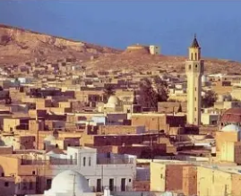
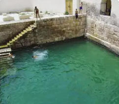
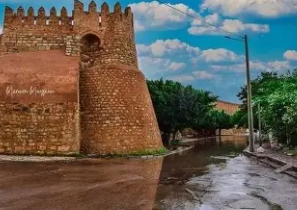
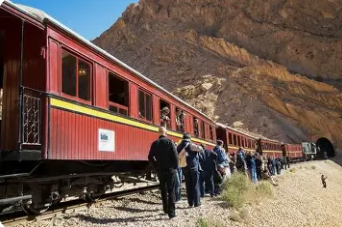
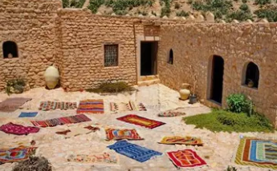

Capitale du Phosphate

Gafsa est un gouvernorat situé dans le centre-ouest de la Tunisie, aux portes du désert. C'est une région riche en histoire remontant à la préhistoire, avec la culture capsienne qui tire son nom de Capsa, l'ancien nom romain de Gafsa.
La ville de Gafsa, chef-lieu du gouvernorat, est une oasis ancienne entourée de montagnes arides et de palmeraies. Elle est le centre de l'industrie minière du phosphate, ressource stratégique de la Tunisie.
Le gouvernorat se distingue par ses gisements de phosphate parmi les plus importants au monde, ses oasis verdoyantes contrastant avec le désert, son patrimoine préhistorique exceptionnel, et ses sources thermales naturelles.
Gisements de phosphate parmi les plus riches au monde. Industrie minière majeure pour l'économie tunisienne. Metlaoui et M'dilla, villes minières importantes du bassin minier.
Berceau de la civilisation capsienne (10 000-6 000 av. J.-C.), culture préhistorique majeure d'Afrique du Nord. Sites archéologiques préhistoriques importants et musée spécialisé.
Bassins romains alimentés par sources thermales naturelles au cœur de la ville. Eaux chaudes toute l'année, lieu de baignade populaire depuis l'Antiquité. Monument historique unique.
Oasis verdoyantes avec palmeraies luxuriantes au milieu du désert. Agriculture oasienne traditionnelle, dattes de qualité, jardins irrigués. Contraste saisissant avec l'aridité environnante.

Bassins romains monumentaux du IIe siècle alimentés par sources thermales naturelles à 28-31°C. Lieu de baignade public depuis 2000 ans. Arches romaines, palmiers majestueux. Site unique en son genre, symbole de la ville.

Forteresse byzantine puis ottomane dominant la vieille ville. Remparts imposants, architecture militaire historique. Transformée en musée archéologique abritant des vestiges de la culture capsienne et des périodes romaine et islamique.

Ville minière historique point de départ du célèbre train touristique "Le Lézard Rouge". Ancien train beylical luxueux traversant les gorges spectaculaires de Selja. Paysages désertiques époustouflants, canyon rocheux, palmiers sauvages.

Village berbère de montagne au patrimoine unique. Architecture troglodyte traditionnelle, greniers fortifiés (ksour) accrochés aux falaises. Culture amazighe préservée, paysages montagneux spectaculaires. Histoire de résistance et d'identité berbère.